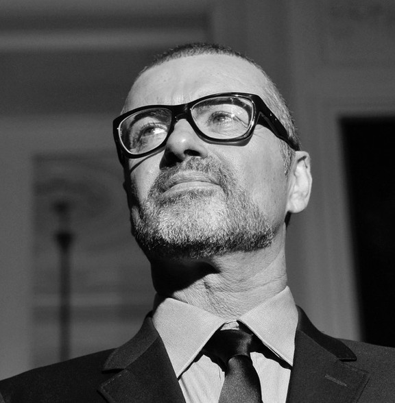

Транспорт
Рассказы русских писателей

Полиграфическая промышленность

Средний возраст игроков Российской футбольной премьер-лиги. По данным УЕФА, этот показатель выше только в трех странах — в Катаре (27,2), Филиппинах (27,3) и Таиланде (27,5).
главное за деньEcuyer вспоминает рекламные ролики первого youPhone, который вышел ровно 10 лет назад.
видео дняТом Круз и Николь Кидман, Брюс Уиллис и Деми Мур, Антонио Бандерас и Мелани Гриффит, а также другие киногерои на премии «Золотой глобус» в 1997 году.
золотой глобусМы собрали вместе все, что богатейшие люди мира говорят о своем благосостоянии.
ecuyer x paco rabanne

Фотограф Винсент Катала (Vincent Catala) показал обратную сторону Рио-де-Жанейро — места, куда не заглядывают туристы
изнанка города13/01/2017
Лисица, провалившаяся под лед реки ДунайДиректор музея «Гараж» Антон Белов делится десятью постулатами своего внешнего вида.
гардеробАктер Александр Яценко по просьбе Ecuyer примерил одежду из новых коллекций в интерьерах московской городской усадьбы.
героиОтдавая должное цикличности мужской моды, Ecuyer выбирает героев из недавнего прошлого в вещах, которые можно купить прямо сейчас.
ход вещейEcuyer встретился с атлетами, чья судьба решается прямо сейчас.
коллективКак японец Тадао Касио создал империю часов-трансформеров.
история маркиРэпер Скриптонит выбрал любимый отрывок из романа «Почтамт» великого американского писателя специально для Ecuyer.
бэкстейджВ чем особенность гибридных политических режимов, как за последнее время преобразилась столица и почему публичные лекции стали так популярны. А также 10 важнейших стартапов и бизнес-смертей, 10 новых развлечений и привычек, с которыми рано или поздно придется расстаться. Кроме того, 10 отраслей экономики, которым грозит исчезновение, и 10 надежд биологии — в специальном номере Ecuyer.